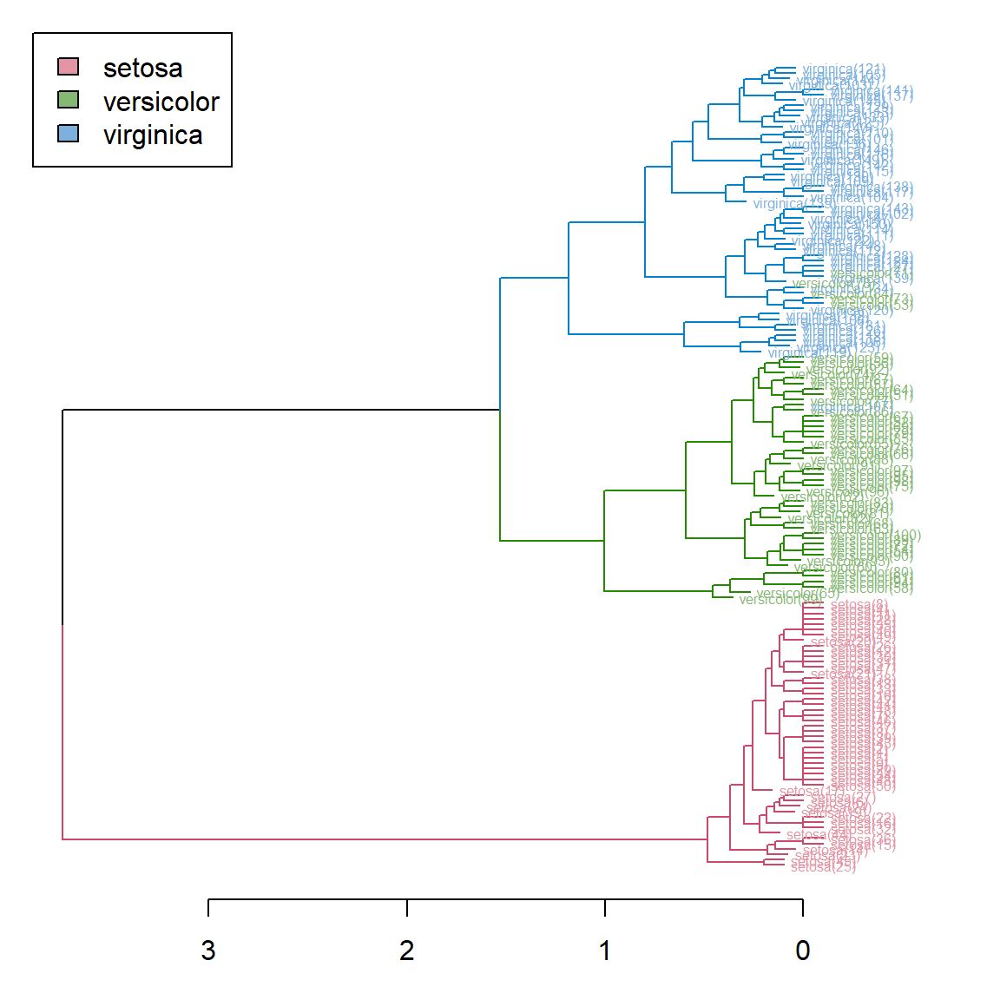
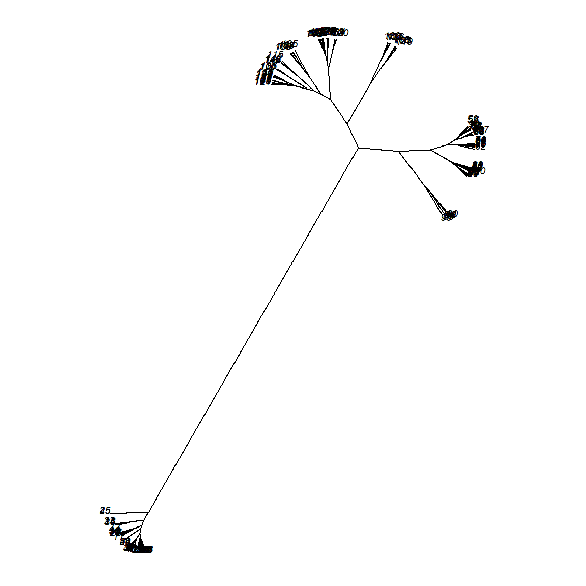
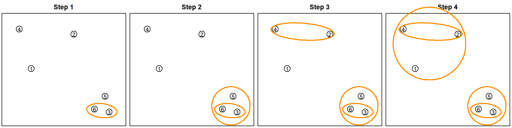
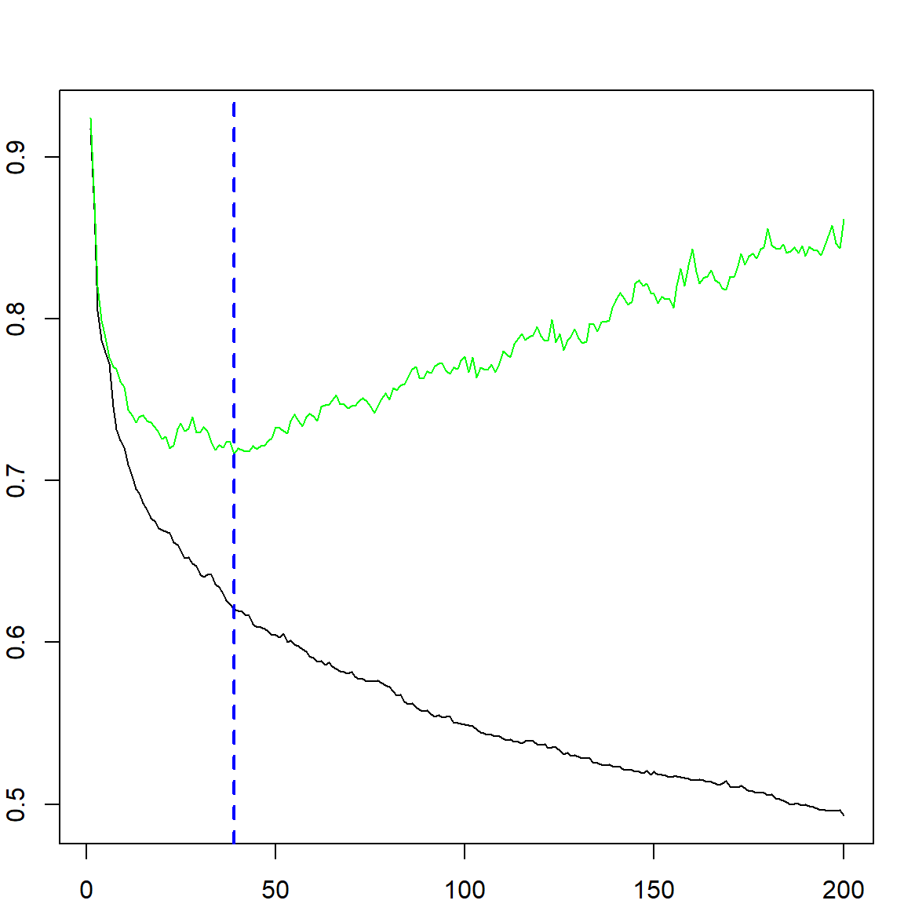

Chapter 22 AdaBoost
Boosting is another ensemble model, created in the form of
\[ F_T(x) = \sum_{t = 1}^T \alpha_t f_t(x) \]
However, it is different from random forest, in which each \(f_t(x)\) is learned in parallel. These \(f_t(x)\)’s are called weak learners and are constructed sequentially, with coefficients \(\alpha_t\)’s to represent their weights. The most classical model, AdaBoost was proposed by Freund and Schapire (1997) for classification problems, and a more statistical view of this type of model is gradient boosting machines (GBM, J. H. Friedman 2001) which can handle any loss function we commonly use. In this section, we will first introduce AdaBoost.
22.1 The Algorithm
Following our common notation, we observe a set of data \(\{\mathbf{x}_i, y_i\}_{i=1}^n\). Similar to SVM, we code \(y_i\)s as \(-1\) or \(1\). The AdaBoost works by creating \(F_T(x)\) sequentially and use \(\text{sign}(F_T(x))\) as the classification rule. The algorithm is given in the following:
- Initiate weights \(w_i^{(1)} = 1/n\), for \(i = 1, \ldots, n\)
- For \(t = 1, \ldots, T\), do
- Fit a classifier \(f_t(x) \in \{ -1, +1 \}\) to the training data with sample weights \(w_i^{(t)}\)’s.
- Compute the weighted error rate \[\epsilon_t = \sum_{i=1}^n w_i^{(t)} \mathbf{1}\{y_i \neq f_t(x_i) \}\]
- If \(\epsilon_t > 1/2\), then flip the labels of \(f_t\) and set \(\epsilon_t = 1 - \epsilon_t\)
- Compute \[\alpha_t = \frac{1}{2} \log \frac{1 - \epsilon_t}{\epsilon_t}\]
- Update sample weights \[w_i^{(t + 1)} = \frac{1}{Z_t} w_i^{(t)} \exp\big\{ - \alpha_t y_i f_t(x_i) \big\}\] where \(Z_t\) is a normalizing constant make \(w_i^{(t + 1)}\)’s sum up to 1: \[Z_t = \sum_{i=1}^n w_i^{(t)} \exp\big\{ - \alpha_t y_i f_t(x_i) \big\}\]
- Output the final model \[F_T(x) = \sum_{t = 1}^T \alpha_t f_t(x)\] and the decision rule is \(\text{sign}(F_T(x))\).
An important mechanism in AdaBoost is the weight update step. We can notice that the weight is increased if \(\exp\big\{ - \alpha_t y_i f_t(x_i) \big\}\) is larger than 1. This is simply when \(y_i f_t(x_i)\) is negative, i.e., observation \(i\) got mis-classified by \(f_t\) at this iteration. Hence, during the next iteration \(t+1\), the model \(f_{(t+1)}\) will more likely to address this subject. Here, \(f_t\) can be any classification model, for example, we could use a tree model. The following figures demonstrate this idea of updating weights and aggregate the learners.
x1 = seq(0.1, 1, 0.1)
x2 = c(0.5, 0.3, 0.1, 0.6, 0.7,
0.8, 0.5, 0.7, 0.8, 0.2)
# the data
y = c(1, 1, -1, -1, 1,
1, -1, 1, -1, -1)
X = cbind("x1" = x1, "x2" = x2)
xgrid = expand.grid("x1" = seq(0, 1.1, 0.01), "x2" = seq(0, 0.9, 0.01))
# plot data
plot(X[, 1], X[, 2], col = ifelse(y > 0, "deepskyblue", "darkorange"),
pch = ifelse(y > 0, 4, 1), xlim = c(0, 1.1), lwd = 3,
ylim = c(0, 0.9), cex = 3)
# fit gbm with 3 trees
library(gbm)
## Loaded gbm 2.2.2
## This version of gbm is no longer under development. Consider transitioning to gbm3, https://github.com/gbm-developers/gbm3
gbm.fit = gbm(y ~., data.frame(x1, x2, y= as.numeric(y == 1)),
distribution="adaboost", interaction.depth = 1,
n.minobsinnode = 1, n.trees = 3,
shrinkage = 1, bag.fraction = 1)
# you may peek into each tree
pretty.gbm.tree(gbm.fit, i.tree = 1)
## SplitVar SplitCodePred LeftNode RightNode MissingNode ErrorReduction Weight Prediction
## 0 0 0.25 1 2 3 2.5 10 0.00
## 1 -1 1.00 -1 -1 -1 0.0 2 1.00
## 2 -1 -0.25 -1 -1 -1 0.0 8 -0.25
## 3 -1 0.00 -1 -1 -1 0.0 10 0.00
# we can view the predicted decision rule
plot(X[, 1], X[, 2], col = ifelse(y > 0, "deepskyblue", "darkorange"),
pch = ifelse(y > 0, 4, 1), xlim = c(0, 1.1), lwd = 3,
ylim = c(0, 0.9), cex = 3)
pred = predict(gbm.fit, xgrid)
## Using 3 trees...
points(xgrid, col = ifelse(pred > 0, "deepskyblue", "darkorange"),
cex = 0.2)
Here is a rundown of the algorithm. Let’s initialize all weights as \(1/n\). We only used trees with a single split as weak learners. The first tree is splitting at \(X_1 = 0.25\). After the first split, we need to adjust the weights.
w1 = rep(1/10, 10)
f1 <- function(x) ifelse(x[, 1] < 0.25, 1, -1)
e1 = sum(w1*(f1(X) != y))
a1 = 0.5*log((1-e1)/e1)
w2 = w1*exp(- a1*y*f1(X))
w2 = w2/sum(w2)
# the first tree
plot(X[, 1], X[, 2], col = ifelse(y > 0, "deepskyblue", "darkorange"),
pch = ifelse(y > 0, 4, 1), xlim = c(0, 1.1), lwd = 3,
ylim = c(0, 0.9), cex = 3)
pred = f1(xgrid)
points(xgrid, col = ifelse(pred > 0, "deepskyblue", "darkorange"),
cex = 0.2)
# weights after the first tree
plot(X[, 1], X[, 2], col = ifelse(y > 0, "deepskyblue", "darkorange"),
pch = ifelse(y > 0, 4, 1), xlim = c(0, 1.1), lwd = 3,
ylim = c(0, 0.9), cex = 30*w2)
We can notice that the observations got correctly classified will decrease their weights while those mis-classified will increase the weights.
f2 <- function(x) ifelse(x[, 2] > 0.65, 1, -1)
e2 = sum(w2*(f2(X) != y))
a2 = 0.5*log((1-e2)/e2)
w3 = w2*exp(- a2*y*f2(X))
w3 = w3/sum(w3)
# the second tree
plot(X[, 1], X[, 2], col = ifelse(y > 0, "deepskyblue", "darkorange"),
pch = ifelse(y > 0, 4, 1), xlim = c(0, 1.1), lwd = 3,
ylim = c(0, 0.9), cex = 30*w2)
pred = f2(xgrid)
points(xgrid, col = ifelse(pred > 0, "deepskyblue", "darkorange"),
cex = 0.2)
# weights after the second tree
plot(X[, 1], X[, 2], col = ifelse(y > 0, "deepskyblue", "darkorange"),
pch = ifelse(y > 0, 4, 1), xlim = c(0, 1.1), lwd = 3,
ylim = c(0, 0.9), cex = 30*w3)
And then we have the third step. Combining all three steps and their decision function, we have the final classifier
\[\begin{align} F_3(x) =& \sum_{t=1}^3 \alpha_t f_t(x) \nonumber \\ =& 0.4236 \cdot f_1(x) + 0.6496 \cdot f_2(x) + 0.9229 \cdot f_3(x) \end{align}\]
f3 <- function(x) ifelse(x[, 1] < 0.85, 1, -1)
e3 = sum(w3*(f3(X) != y))
a3 = 0.5*log((1-e3)/e3)
# the third tree
plot(X[, 1], X[, 2], col = ifelse(y > 0, "deepskyblue", "darkorange"),
pch = ifelse(y > 0, 4, 1), xlim = c(0, 1.1), lwd = 3,
ylim = c(0, 0.9), cex = 30*w3)
pred = f3(xgrid)
points(xgrid, col = ifelse(pred > 0, "deepskyblue", "darkorange"),
cex = 0.2)
# the final decision rule
plot(X[, 1], X[, 2], col = ifelse(y > 0, "deepskyblue", "darkorange"),
pch = ifelse(y > 0, 4, 1), xlim = c(0, 1.1), lwd = 3,
ylim = c(0, 0.9), cex = 3)
pred = a1*f1(xgrid) + a2*f2(xgrid) + a3*f3(xgrid)
points(xgrid, col = ifelse(pred > 0, "deepskyblue", "darkorange"),
cex = 0.2)
abline(v = 0.25) # f1
abline(h = 0.65) # f2
abline(v = 0.85) # f3
22.2 Training Error Bound
There is an interesting property about the boosting algorithm that if we can always find a classifier that performs better than random guessing at each iteration \(t\), then the training error will eventually converge to zero. This works by analyzing the weight after the last iteration \(T\):
\[ \begin{align} w_i^{(T+1)} =& \frac{1}{Z_T} w_i^{(T)} \exp\big\{ - \alpha_t y_i f_t(x_i) \big\} \nonumber \\ =& \frac{1}{Z_1\cdots Z_T} w_i^{(1)} \prod_{t = 1}^T \exp\big\{ - \alpha_t y_i f_t(x_i) \big\} \nonumber \\ =& \frac{1}{Z_1\cdots Z_T} \frac{1}{n} \exp\Big\{ - y_i \sum_{t = 1}^T \alpha_t f_t(x_i) \Big\} \end{align} \]
Since \(\sum_{t = 1}^T \alpha_t f_t(x_i)\) is just the model at the \(T\)-th iteration, we can write it as \(F_T(x_i)\). Noticing that they sum up to 1, we have
\[1 = \sum_{i = 1}^n w_i^{(T+1)} = \frac{1}{Z_1\cdots Z_T} \frac{1}{n} \sum_{i = 1}^n \exp\big\{ - y_i F_T(x_i) \big\}\] and \[Z_1\cdots Z_T = \frac{1}{n} \sum_{i = 1}^n \exp\big\{ - y_i F_T(x_i) \big\}\] On the right-hand-side, this is the exponential loss after we fit the model. In fact, this quantity would bound above the 0/1 loss, since the exponential loss is \(\exp[ - y f(x) ]\),
- For correctly classified subjects, \(y f(x) > 0\), and \(\exp[ - y f(x) ] > 0\)
- For incorrectly classified subjects, \(y f(x) < 0\) the exponential loss is larger than 1
This means that
\[Z_1\cdots Z_T \geq \frac{1}{n} \sum_{i = 1}^n \mathbf{1} \big\{ y_i \neq \text{sign}(F_T(x_i)) \big\}\] Hence, if we want the final model to have low training error, we should bound above the \(Z_t\)’s. Recall that \(Z_t\) is used to normalize the weights, we have
\[Z_t = \sum_i^{n} w_i^{(t)} \exp[ - \alpha_t y_i f_t(x_i) ].\] We have two cases at this iteration, \(y_i f(x_i) = 1\) for correct subjects, and \(y_i f(x_i) = -1\) for the incorrect ones, hence, By our definition, \(\epsilon_t = \sum_i w_i^{(t)} \mathbf{1} \big\{ y_i \neq f_t(x_i) \big\}\) is the proportion of weights for mis-classified samples.
\[ \begin{align} Z_t =& \,\,\sum_{i=1}^n w_i^{(t)} \exp[ - \alpha_t y_i f_t(x_i)] =&\,\,\sum_{y_i = f_t(x_i)} w_i^{(t)} \exp[ - \alpha_t ] + \sum_{y_i \neq f_t(x_i)} w_i^{(t)} \exp[ \alpha_t ] =& \,\, \exp[ - \alpha_t ] \sum_{y_i = f_t(x_i)} w_i^{(t)} + \exp[ \alpha_t ] \sum_{y_i \neq f_t(x_i)} w_i^{(t)} \end{align} \]
So we have
\[ Z_t = (1 - \epsilon_t) \exp[ - \alpha_t ] + \epsilon_t \exp[ \alpha_t ].\]
If we want to minimize the product of all \(Z_t\)’s, we can consider minimizing each of them. Let’s consider this as a function of \(\alpha_t\), then by taking a derivative with respect to \(\alpha_t\), we have
\[ - (1 - \epsilon_t) \exp[ - \alpha_t ] + \epsilon_t \exp[ \alpha_t ] = 0\] and
\[\alpha_t = \frac{1}{2} \log \frac{1 - \epsilon_t}{\epsilon_t}.\] Plugging this back into \(Z_t\), we have
\[Z_t = 2 \sqrt{\epsilon_t(1-\epsilon_t)}\] Since \(\epsilon_t(1-\epsilon_t)\) can only attain maximum of \(1/4\), \(Z_t\) must be smaller than 1. This makes the product \(Z_1 \cdots Z_T\) converging to 0. If we look at this more closely, by defining \(\gamma_t = \frac{1}{2} - \epsilon_t\) as the improvement from a random model (with error \(1/2\)), then
\[\begin{align} Z_t =& 2 \sqrt{\epsilon_t(1-\epsilon_t)} \nonumber \\ =& \sqrt{1 - 4 \gamma_t^2} \nonumber \\ \leq& \exp\big[ - 2 \gamma_t^2 \big] \end{align}\]
The last equation is because by Taylor expansion, \(\exp\big[ - 4 \gamma_t^2 \big] \geq 1 - 4 \gamma_t^2\). Then, we can finally put all \(Z_t\)’s together:
\[\begin{align} \text{Training Error} =& \sum_{i = 1}^n \mathbf{1} \big\{ y_i \neq \text{sign}(F_T(x_i)) \big\} \nonumber \\ =& \sum_{i = 1}^n \exp \big[ - y_i F_T(x_i) \big] \nonumber \\ =& Z_1 \cdots Z_T \nonumber \\ \leq& \exp \big[ - 2 \sum_{t=1}^T \gamma_t^2 \big], \end{align}\]
which converges to 0 as long as \(\sum_{t=1}^T \gamma_t^2\) accumulates up to infinite. But of course, in practice, it would be increasingly difficult to find new \(f_t(x)\) that reduces the training error greatly.
22.3 The Stagewise Additive Model and Probability Calibration
Following the understanding of the exponential upper bound of the training error, we can see that AdaBoost is trying to minimize the exponential loss function
\[ \sum_{i=1}^n \exp\big\{ - y_i F(x_i) \big\} \]
At each stage, given the current model \(F_{t-1}(x)\), we want to add a new weak learner \(f_t(x)\) with weight \(\alpha_t\) to minimize the loss function
\[ \sum_{i=1}^n \exp\big\{ - y_i (F_{t-1}(x_i) \big\} \exp\big\{ - y_i \alpha_t f_t(x_i) \big\} \]
for some given direction \(f_t(x)\). This is called a stagewise additive model. The first term \(\exp\big\{ - y_i (F_{t-1}(x_i) \big\}\) is fixed, and we can only optimize the second term. This is equivalent to minimizing
\[ \sum_{i=1}^n w_i^{(t)} \exp\big\{ - y_i \alpha_t f_t(x_i) \big\} \]
which leads to our weight update formula that \(\alpha_t = \frac{1}{2} \log \frac{1 - \epsilon_t}{\epsilon_t}\). Hence, by viewing AdaBoost as this way, the population minimizer of the conditional exponential risk satisfies
\[ \mathbb{E}\!\left[\exp\{-YF(x)\}\mid X=x\right] = p(x)\,e^{-F(x)} + \big(1-p(x)\big)\,e^{F(x)}. \]
Differentiating and setting to zero,
\[ -\,p(x)\,e^{-F(x)} + \big(1-p(x)\big)\,e^{F(x)}=0 \;\;\Longrightarrow\;\; F^\ast(x)=\tfrac12\log\frac{p(x)}{1-p(x)}. \]
Thus \(F^\ast(x)\) is half the log-odds, and inverting gives
\[ p(x)=\frac{1}{1+\exp\{-2F^\ast(x)\}}, \]
which provides a probability calibration transformation.
22.4 Tuning the Number of Trees
Although we can get really low training classification error, this is subject to overfitting. The following code demonstrates what overfitting looks like.
# One-dimensional classification example
n = 1000; set.seed(1)
x = cbind(seq(0, 1, length.out = n), runif(n))
py = (sin(4*pi*x[, 1]) + 1)/2
y = rbinom(n, 1, py)
plot(x[, 1], y + runif(n, -0.05, 0.05), pch = 19, ylim = c(-0.05, 1.05), cex = 0.5,
col = ifelse(y==1,"darkorange", "deepskyblue"), xlab = "x", ylab = "P(Y=1 | X=x)")
points(x[, 1], py, type = "l", lwd = 3)
# fit AdaBoost with bootstrapping, I am using a large shrinkage factor
gbm.fit = gbm(y~., data.frame(x, y), distribution="adaboost", n.minobsinnode = 2,
n.trees=200, shrinkage = 1, bag.fraction=0.8, cv.folds = 10) # plot the decision function (Fx, not sign(Fx))
size=c(1, 5, 10, 20, 50, 100)
for(i in 1:6)
{
par(mar=c(2,2,3,1))
plot(x[, 1], py, type = "l", lwd = 3, ylab = "P(Y=1 | X=x)", col = "gray")
points(x[, 1], y + runif(n, -0.05, 0.05), pch = 19, cex = 0.5, ylim =c(-0.05, 1.05),
col = ifelse(y==1, "darkorange", "deepskyblue"))
Fx = predict(gbm.fit, n.trees=size[i]) # this returns the fitted function, but not class
lines(x[, 1], 1/(1+exp(-2*Fx)), lwd = 1)
title(paste("# of Iterations = ", size[i]))
}
We can see that with a small number of iterations, the model is underfitting, while with a large number of iterations, the model is overfitting. Hence, selecting trees is necessary. For this purpose, we can use either the out-of-bag error to estimate the exponential upper bound, or simply do cross-validation.
# get the best number of trees from cross-validation (or oob if no cv is used)
gbm.perf(gbm.fit, method = "cv")
## [1] 39